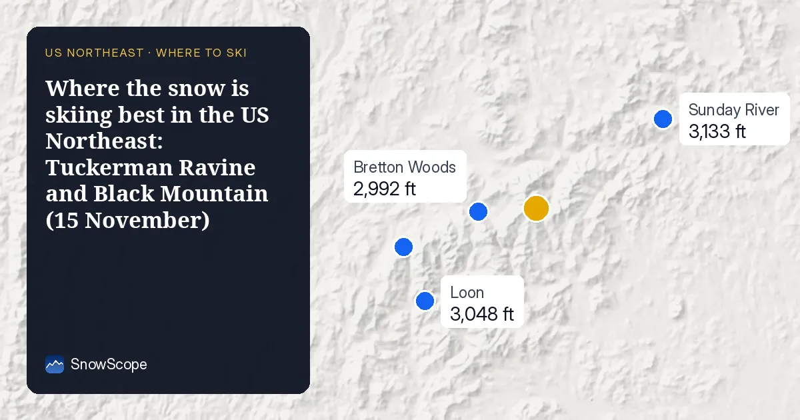

Where the snow is skiing best in the US Northeast: Tuckerman Ravine and Black Mountain (15 November)
On 15 November, Tuckerman Ravine and Black Mountain have the deepest snow in the US Northeast. Tuckerman Ravine leads at 24 cm (9 in) on the upper slopes, with Black Mountain at 15 cm (6 in). Both resorts sit above a region where snow is now scarce—only 41 of 111 resorts have measurable cover—so height and slope aspect decide where you can still ski.
See the live snow forecast for Tuckerman Ravine in the SnowScope appSnow depth, powder alerts and the 3D map, free.
Upper slopes hold the most snow
Tuckerman Ravine's upper slopes carry 24 cm (9 in), the deepest in this group. Black Mountain's upper terrain sits at 15 cm (6 in). At lower elevations and at the base of Black Mountain, the SnowScope map shows no cover at all. Early-season snow is thin: rocks and grass hide just beneath it, so stay on open, groomed pistes where the resort has prepared the run.
The freezing level on 15 November ranges from 510 m to 780 m across the region. This means that any snow falling on lower terrain may turn to rain or become slushy. Seek the highest slopes you can reach.
| Resort | Snow depth | New snow, 72 h | Coming, next days | Top |
|---|---|---|---|---|
| Tuckerman Ravine | 9 in (24 cm) | 2 in (4 cm) | 0 in (0 cm) | – |
| Black Mountain | 6 in (15 cm) | 1 in (2 cm) | 0 in (0 cm) | 2,247 ft (685 m) |

North-facing slopes beat the sun
South-facing runs take full sun and melt fastest, especially in November when the sun angle is low but the ground is still warm. North-facing slopes stay frozen longer and preserve the snowpack. If your resort lists north-facing terrain, it is your best bet for holding what little snow is there.
At Tuckerman Ravine, 2 cm (0.8 in) fell in the last 24 hours; in the past 72 hours, 4 cm (1.6 in) arrived. Black Mountain received 1 cm (0.4 in) in the last 24 hours and 2 cm (0.8 in) in three days. This pace is slow, so the snow you see today is the snow you need to ski on. No fresh snow is forecast for the next three days.
What the forecast means
By 18 November, the SnowScope map shows only 17 resorts with snow across the entire US Northeast—down from 41 today. The snow-covered area shrinks from 15,640 km² to 990 km². This is not a region where you can wait for the next storm or switch between resorts. The window to ski is narrow.
Forecasts can change, especially a few days ahead. Check the map again on 16 November before you travel. If you are planning a trip for later in the week, confirm that your chosen resort still has snow cover.
What the last snow map tells us
The snow on the SnowScope map arrived after that view, or it covers only the highest ridges. This tells you that coverage is patchy and that mid-mountain terrain may be thin or bare.
Tuckerman Ravine showed snow on 11 November and continues to hold it. This consistency is the reason it ranks as the top choice today. If you are driving to the northeast to ski, start with Tuckerman Ravine and use the map to scout the terrain before you buy a ticket.
Checking lifts and opening dates
Snow on the SnowScope map does not mean a resort is open. Ski areas in the US Northeast often open later in November or in early December, waiting for deeper, more stable snow or preparing terrain. Visit the resort website to confirm lift status and opening dates before you drive.
Some smaller resorts next to the well-known names often receive the same snow and offer shorter lift lines. Use the SnowScope map to spot nearby alternatives with cover. Early season is a good time to explore.
Tips for skiers
- Start your day at Tuckerman Ravine if you are choosing between the two: 24 cm on upper slopes beats Black Mountain's 15 cm, and satellite data confirms its snow is recent.
- Head to the highest slopes and seek north-facing runs; the freezing level on 15 November reaches 780 m, so lower terrain risks slush or rain.
- Early-season snow is thin. Rocks and grass hide just below the surface. Stay on open, groomed pistes and avoid off-piste terrain until snow depth and stability improve.
- Before you ski off-piste or go touring, read the official avalanche bulletin for the region.
- Confirm that your chosen resort is open and check lift hours on its website. No fresh snow is forecast for the next three days, so plan your trip around what is on the ground today.
About these numbers
Resort snow depths are the deepest snow on the resort's upper slopes on the date shown; they are estimates for an area, not a measurement at one point. Forecasts can change. Always read the official avalanche bulletin before going off-piste.
Official avalanche bulletins: Mount Washington Avalanche Center
Cite this report
For research, teaching or the press: the numbers and charts are free to reuse under CC BY 4.0 with this citation.
SnowScope (2026), Where the snow is skiing best in the US Northeast: Tuckerman Ravine and Black Mountain (15 November), https://snowscope.app/blog/en/2026/11/us-northeast-where-to-ski-best-snow-15-november-2026.html, accessed 2026-11-15
SnowScope (Atlas Labs). (2026, November 15). Where the snow is skiing best in the US Northeast: Tuckerman Ravine and Black Mountain (15 November). SnowScope snow reports. https://snowscope.app/blog/en/2026/11/us-northeast-where-to-ski-best-snow-15-november-2026.html
BibTeX
@misc{snowscope2026usnortheastwheretoskibes,
author = {{SnowScope (Atlas Labs)}},
title = {Where the snow is skiing best in the US Northeast: Tuckerman Ravine and Black Mountain (15 November)},
year = {2026},
month = nov,
howpublished = {\url{https://snowscope.app/blog/en/2026/11/us-northeast-where-to-ski-best-snow-15-november-2026.html}},
note = {Published 2026-11-15 17:21 UTC; accessed 2026-11-15}
}· CC BY 4.0 · Methods, data and tools →
Tuckerman Ravine: snow and temperature by height, this winter vs last (tools) →
Follow Tuckerman Ravine
Free: a message when fresh snow is coming, and the forecast every morning.
More snow reports

Magic Mountain Ski Area in southern Vermont sits on thin natural snow. Peak depths at the base are 21 in (54 cm); at the top, 26 in (67 cm). Data from 46 past winters, November 2026.

Mad River Glen, Vermont: natural snow, about 30 in (75 cm) at the usual peak at mid-mountain over 46 past winters, February deepest. Three ways to plan a day there.

2 of 4: that is how many resorts in the US Northeast are clearly above normal today. How does this winter look so far? We set today's snow at 4 …